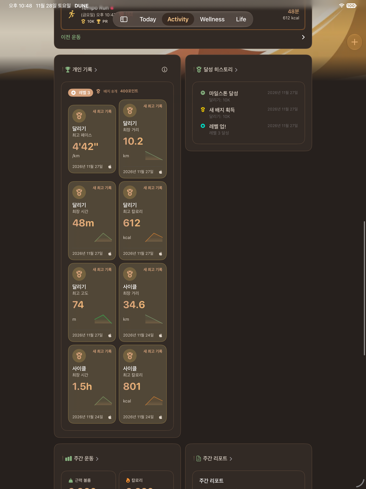
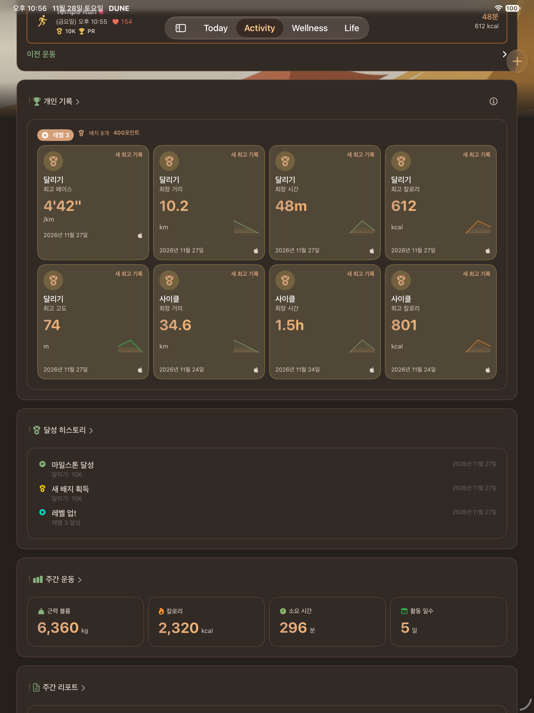

전체 실제 화면 디자인맵
iPad Activity 카드 배치
iPad Pro 13형(M5), iPad mini(A20 Pro) · iPadOS 27.2 · 한국어 · 다크 모드 · 기본 글씨 · 테스트용 운동 기록
개인 기록과 달성 히스토리

수정 전. 기록 8개가 네 줄로 쌓이고, 오른쪽 달성 히스토리 아래 약 823pt가 비었다.

수정 후. 한 줄에 기록 4개를 보여주고 그 아래에 달성 히스토리와 주간 운동이 16pt 간격으로 이어진다.
iPad mini 세로 화면에서는 기록 8개가 3개, 3개, 2개씩 배치된다. 마지막 줄의 카드 2개가 폭을 나눠 위 줄과 양쪽 끝이 맞는다.
세로 화면의 준비도와 근육 지도 · 캡처 출처와 검증 결과